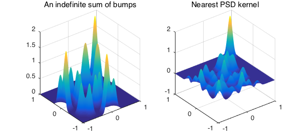
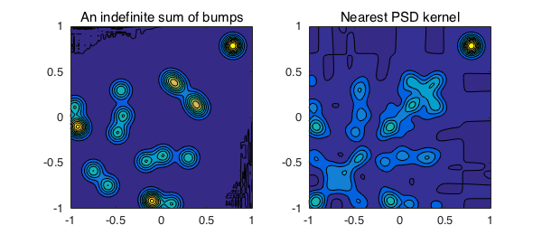

function NearestPSDKernel()
Introduction
Bivariate kernels are functions which play an important role in the context of integral equations. Symmetric positive definite kernels are ubiquitous e.g., in radial basis function (RBF) methods [Ch. 3-4, 2]. Suppose that $K(x,y)$ is a given symmetric kernel defined on a domain $[a, b] \times [a, b]$, where symmetric means $K(x,y) = K(y,x)$. Then $K$ has a spectral expansion
$$ K(x,y) = \sum_{i=1}^{\infty} \lambda_i\ q_i(x)\ q_i(y),\ \ \ \ \ (1)$$
where ${ q_1, q_2, \cdots }$ are orthonormal eigenfunctions and $|\lambda_1| \geq |\lambda_2| \geq ... $ are eigenvalues of $K$. Although mathematically, $K(x,y)$ has an infinite number of eigenvalues, our focus is on kernels that numerically have a finite number of eigenvalues. Note that the eigenvalues of an analytic kernel on a finite interval tend to zero at least as fast as $R^{-n}$ for some fixed $R<1$ which depends on the domain of analyticity of the kernel [5]. We consider the problem of finding a nearest symmetric positive semidefinite (PSD) kernel $\hat{K}(x,y)$, i.e., one that minimizes $||K-\hat{K}||_2$. A solution to this problem is
$$ \hat{K}(x,y) = \sum_{i=1}^{\infty} \max ( \lambda_i,0 ) \ q_i(x)\ q_i(y). $$
In other words, in order to get a nearest positive semidefinite kernel, we just need to remove terms in the spectral expansion of $K$ that correspond to negative eigenvalues. The function $\hat{K}$ is also called the positive semidefinite part of $K$. This is a continuous analogue of the problem of finding a nearest positive semidefinite matrix [1]. See also [4], where the problem is solved for a general (not necessarily symmetric) matrix.
In practice, we assume that $K$ can be approximated to accuracy $\epsilon_M$ by a finite rank function [8-9]. One can easily compute such an approximation in Chebfun, even though Chebfun2 has no eig command currently. The point is that the singular value expansion
$$ K(x,y) = U \Sigma V^T = \sum_{i=1}^{\infty} \sigma_i\ u_i(x)\ v_i(y), $$
is related to the spectral expansion (1) as follows:
$$ \Sigma = \mbox{diag}(|\lambda_1|, |\lambda_2|, \cdots), \mbox{ and } V = (\mbox{sign}(\lambda_1) u_1, \mbox{sign}(\lambda_2) u_2, \cdots ). $$
See e.g., [p. 31, 3] for details in the discrete case. Let us try some symmetric indefinite kernels in Chebfun. The function KHat = nearestPSD(K) in the following computes $\hat{K}$.
Let us recall that even though spectral expansion of an operator is classic [7], it makes sense to talk also about spectral expansion of a bivariate function in the context of approximation. But it is not our aim here to make this connection precise.
A multiquadric kernel
One of the famous kernels used in the field of RBFs is the multiquadric. This kernel is indefinite in general [6], so its approximation by a positive semidefinite kernel is nontrivial. More specifically, as Grady Wright noticed, the multiquadric is a conditionally negative definite kernel, which means that it has one positive eigenvalue and the rest are negative. In the following we try $-1$ times the multiquadric, which is a conditionally positive definite kernel, and the nearest PSD kernel would be of rank one less than the negative of the multiquadric.
c = 0.01; mq = @(x,y) -sqrt((x.^2+y.^2) + c^2); K = chebfun2(mq,[-2 2 -2 2]) KHat = nearestPSD(K)
K =
chebfun2 object
domain rank corner values
[ -2, 2] x [ -2, 2] 29 [-2.8 -2.8 -2.8 -2.8]
vertical scale = 2.8
KHat =
chebfun2 object
domain rank corner values
[ -2, 2] x [ -2, 2] 28 [0.41 0.41 0.41 0.41]
vertical scale = 0.74
As we see, one negative eigenvalue of $K$ has been removed to form $\hat{K}$.
subplot(1,2,1), contourf(K), axis equal, title('Multiquadric kernel')
subplot(1,2,2), contourf(KHat), axis equal, title('Nearest PSD kernel')
A symmetric positive semidefinite kernel of Gaussian bumps
Here we add $20$ Gaussian bumps with centers at the diagonal of the domain, so that the kernel itself is positive semidefinite and therefore we expect $\hat{K}$ to be the same as $K$.
gam = 50;
K = chebfun2(0);
rng(1)
for n = 1:20
x0 = 2*rand-1;
dK = chebfun2(@(x,y) exp(-gam*((x-x0).^2+(y-x0).^2)));
K = K + dK;
end
K, KHat = nearestPSD(K)
subplot(1,2,1), plot(K), title('A PSD sum of 20 bumps')
subplot(1,2,2), plot(KHat), title('Nearest PSD kernel')
snapnow
subplot(1,2,1), contourf(K), axis equal, title('A PSD sum of 20 bumps')
subplot(1,2,2), contourf(KHat), axis equal, title('Nearest PSD kernel')
K =
chebfun2 object
domain rank corner values
[ -1, 1] x [ -1, 1] 20 [ 1.8 -4.4e-16 -1.4e-15 0.0026]
vertical scale = 4
KHat =
chebfun2 object
domain rank corner values
[ -1, 1] x [ -1, 1] 20 [ 1.8 -3e-16 -1.2e-15 0.0026]
vertical scale = 4
Let's see how different $K$ and $\hat{K}$ are:
norm(K-KHat,'fro')
ans =
0
A symmetric indefinite kernel of Gaussian bumps
Next we add $20$ Gaussian bumps with centers off the diagonal of the domain such that each two of them make a symmetric kernel.
gam = 100;
K = chebfun2(0);
rng(3)
for n = 1:10
x0 = 2*rand-1; y0 = 2*rand-1;
dK = chebfun2(@(x,y) exp(-gam*((x-x0).^2+(y-y0).^2)) ...
+ exp(-gam*((x-y0).^2+(y-x0).^2)));
K = K + dK;
end
K, KHat = nearestPSD(K)
subplot(1,2,1), plot(K), title('An indefinite sum of bumps')
subplot(1,2,2), plot(KHat), title('Nearest PSD kernel')
snapnow
subplot(1,2,1), contourf(K), axis equal, title('An indefinite sum of bumps')
subplot(1,2,2), contourf(KHat), axis equal, title('Nearest PSD kernel')
K =
chebfun2 object
domain rank corner values
[ -1, 1] x [ -1, 1] 20 [1.3e-10 -1.4e-15 1.4e-15 0.00028]
vertical scale = 2
KHat =
chebfun2 object
domain rank corner values
[ -1, 1] x [ -1, 1] 10 [ 0.4 -1.1e-06 -1.1e-06 0.00028]
vertical scale = 2


A function with horizontal and vertical ridges
K = cheb.gallery2('waffle')
KHat = nearestPSD(K)
K =
chebfun2 object
domain rank corner values
[ -1, 1] x [ -1, 1] 29 [0.0032 0.0032 0.0032 0.0032]
vertical scale = 1
KHat =
chebfun2 object
domain rank corner values
[ -1, 1] x [ -1, 1] 15 [0.24 0.24 0.24 0.24]
vertical scale = 1.9
Here, $14$ negative eigenvalues of $K$ are removed to compute a nearest symmetric positive semidefinite kernel.
subplot(1,2,1), plot(K), title('Waffle')
subplot(1,2,2), plot(KHat), title('Nearest PSD kernel')
snapnow
subplot(1,2,1), contourf(K), axis equal, title('Waffle')
subplot(1,2,2), contourf(KHat), axis equal, title('Nearest PSD kernel')
function KHat = nearestPSD(K)
[U,S,V] = svd(K);
s = zeros(size(U,2),1);
for i=1:size(U,2)
s(i) = U(:,i)'*V(:,i); % inner product of eigenfunctions
end
Lambda = sign(s).*diag(S); % eigenvalues of the kernel K
% Nearest positive semidefinite function to K
ind = find(~(Lambda<0)); % indices of nonnegative eigenvalues
LambdaHat = Lambda(ind); % keep only nonnegative eigenvalues
U = U(:,ind); % keep only the corresponding eigefunctions
V = V(:,ind);
KHat = U*diag(LambdaHat)*V'; % form the solution
end
References
-
S. Boyd, Low rank approximation and extremal gain problems, Lecture notes for Introduction to Linear Dynamical Systems, Stanford University, 2015.
-
G. Fasshauer, Meshfree Approximation Methods with MATLAB, World Scientific, 2007.
-
P.C. Hansen, Discrete Inverse Problems: Insight and Algorithms, SIAM, 2010.
-
N.J. Higham, Computing a nearest symmetric positive semidefinite matrix, Linear Algebra and its Applications, 103 (1988) 103-118.
-
G. Little and J.B. Reade, Eigenvalues of analytic kernels, SIAM Journal on Mathematical Analysis 15 (1984) 133-136.
-
C. S. Ong, X. Mary, S. Canu and A. J. Smola, Learning with non-positive kernels, Proceedings of the 21st International Conference on Machine Learning, Banff, Canada, 2004.
-
F. Riesz and B. Sz.-Nagy, Functional Analysis, Dover, 1990.
-
A. Townsend, Computing with functions in two dimensions, DPhil Thesis, University of Oxford, 2014.
-
A. Townsend and L.N. Trefethen, An extension of Chebfun to two dimensions, SIAM Journal on Scientific Computing 35 (2013) C495-C518.
end